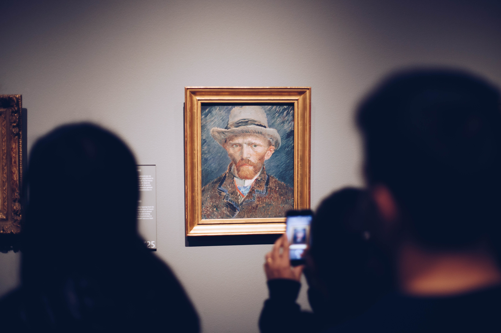
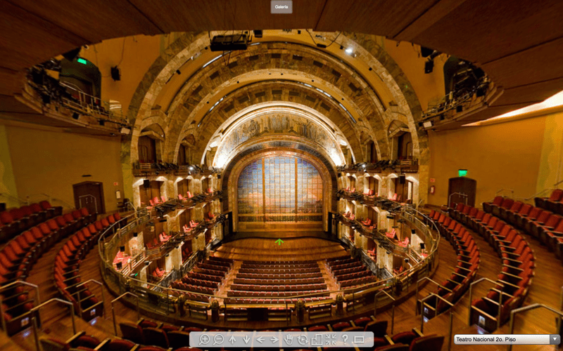
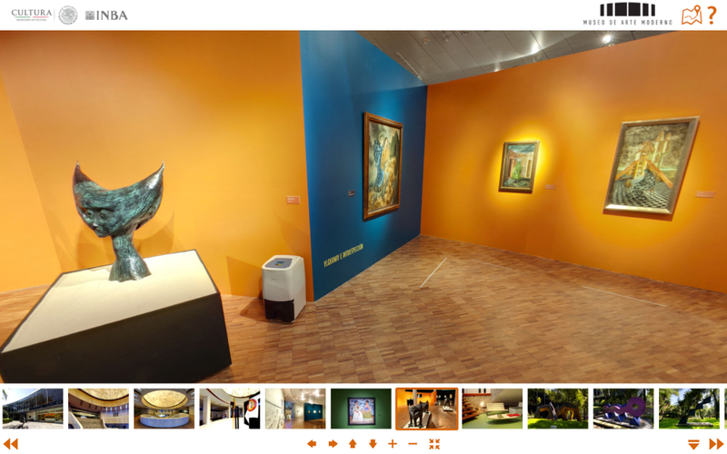
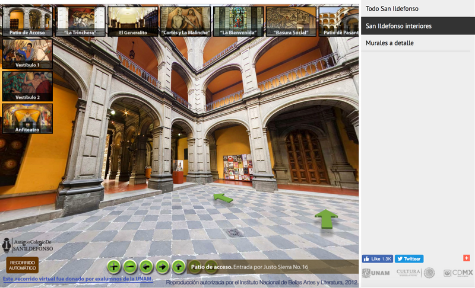
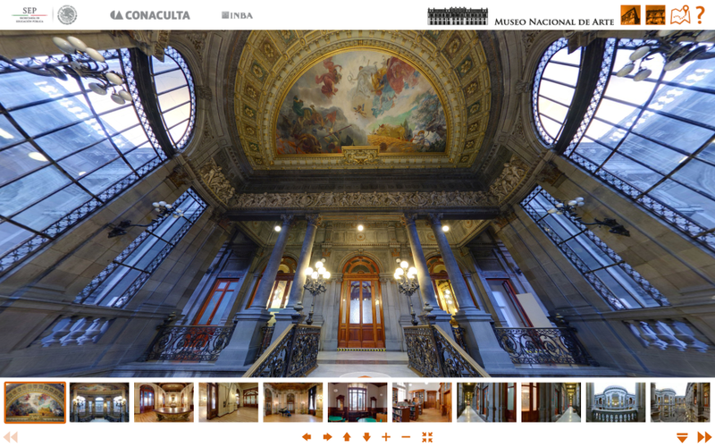

Cultura Estudiantil, Centros Culturales y virtuales
La pandemia ha obligado a las instituciones culturales a cerrar las puertas, afortunadamente en el siglo XXI se han innovado las tecnologías y ahora se pueden observar virtualmente. Estos son algunos de los museos en los que se pueden visitar en línea.

Conoce estos museos en RV(Realidad Virtual)
Requisitos
- Conexión a internet
- Teléfono o computadora
- Lentes RV (opcional)




